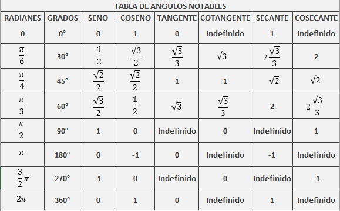

RAZONES TRIGONOMÉTRICAS
Laboratorio
Explore con los botones y deslizadores, los valores de las razones trigonométricas para diferentes ángulos.
Actividad con ThatQuiz
En esta sesión vamos a resolver triángulos mediante razones trigonométricas. Para una explicación, dirígete al botón Vídeo teoría.
Después de ver el vídeo, realiza los ejercicios propuestos de ThatQuiz, apoyate explorando en el laboratorio y/o de las tablas de ángulos notables y las indicaciones:

- 10 ejercicios con: Nivel 4 - Sin - Grados - Resuelva en AB.
- 10 ejercicios con: Nivel 4 - Sin - Grados - Resuelva en <.
- 10 ejercicios con: Nivel 4 - Sin - Radianes - Resuelva en AB.
- 10 ejercicios con: Nivel 4 - Sin - Radianes - Resuelva en <.
- 10 ejercicios con: Nivel 4 - cos - Grados - Resuelva en en AB.
- 10 ejercicios con: Nivel 4 - cos - Grados - Resuelva en <.
- 10 ejercicios con: Nivel 4 - cos - Radianes - Resuelva en AB.
- 10 ejercicios con: Nivel 4 - cos - Radianes - Resuelva en <.
- 10 ejercicios con: Nivel 4 - tan - Grados - Resuelva en AB.
- 10 ejercicios con: Nivel 4 - tan - Grados - Resuelva en <.
- 10 ejercicios con: Nivel 4 - tan - Radianes - Resuelva en AB.
- 10 ejercicios con: Nivel 4 - tan - Radianes - Resuelva en <.
- 10 ejercicios con: Nivel 4 - csc - Grados - Resuelva en AB.
- 10 ejercicios con: Nivel 4 - csc - Grados - Resuelva en <.
- 10 ejercicios con: Nivel 4 - csc - Radianes - Resuelva en AB.
- 10 ejercicios con: Nivel 4 - csc - Radianes - Resuelva en <.
- 10 ejercicios con: Nivel 4 - sec - Grados - Resuelva en AB.
- 10 ejercicios con: Nivel 4 - sec - Grados - Resuelva en <.
- 10 ejercicios con: Nivel 4 - sec - Radianes - Resuelva en AB.
- 10 ejercicios con: Nivel 4 - sec - Radianes - Resuelva en <.
- 10 ejercicios con: Nivel 4 - cot - Grados - Resuelva en AB.
- 10 ejercicios con: Nivel 4 - cot - Grados - Resuelva en <.
- 10 ejercicios con: Nivel 4 - cot - Radianes - Resuelva en AB.
- 10 ejercicios con: Nivel 4 - cot - Radianes - Resuelva en <.
Cada vez que termine un ejercicio tome un pantallazo de la ventana trabajada en ThatQuiz y envíela por Edmodo.
Mini Ajedrez
Explore y juegue el Mini Ajedrez.